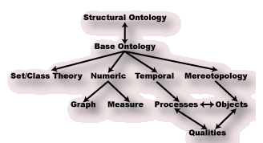

SUMO - The Standard Upper Merged Ontology

Overview
- Three parts
- Upper structural ontology - bootstrapping and commonsense
- Mid-level base ontology - extended commonsense
- Domain ontologies - each for a specific domain of knowledge
Economy ... Transportation ... Geography ... WMD ...
- Written in Standard Upper Ontology Knowledge Interchange Format (SUO-KIF)
Features
- Mostly first-order, but some genuinely higher-order constructs
- Sort information
- Sequence variables
- Reflection
- Integrated documentation